TALLERES
Sobre Nuestros Talleres
La Biblioteca Popular Pueyrredón Sud se constituye como un espacio que busca acercar la lectura a la comunidad, pero también abre sus puertas para que profesionales experimentados en distintas áreas puedan brindar cursos y talleres a las personas que a diario visitan sus salas. Todas nuestras propuestas tienen un costo accesible para que cualquier persona de la comunidad pueda participar y contamos con diversas ofertas: culturales, de idiomas, nuevas tecnologías y manualidades, entre otras.
¡Anotate!
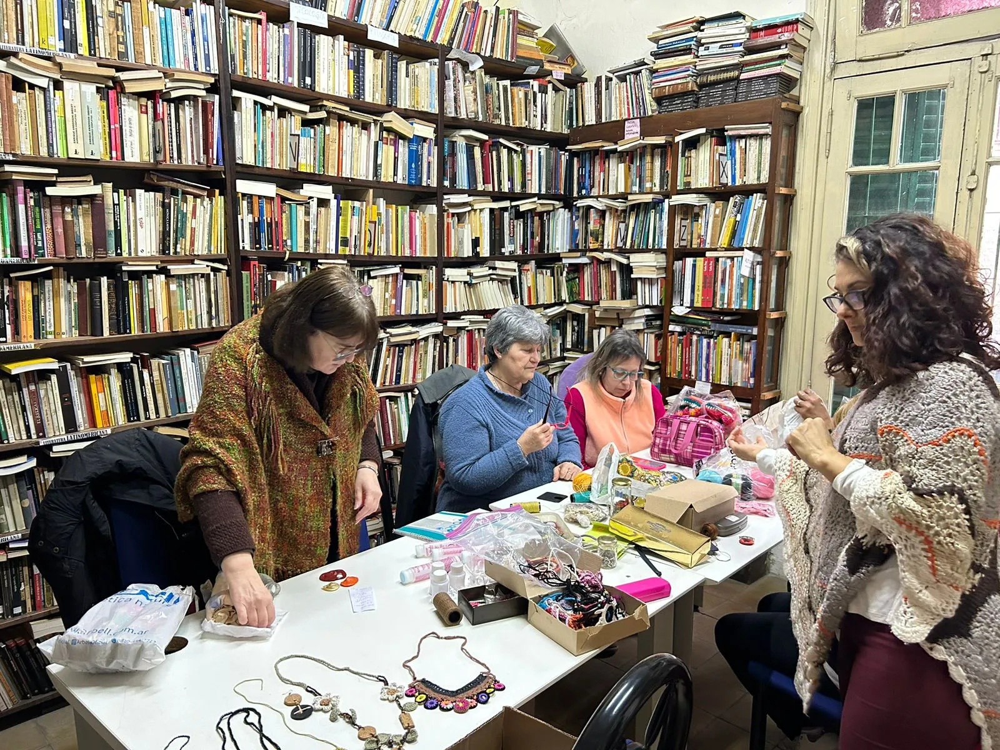
Yoga y meditación
Conectate con tu cuerpo y mente a través del yoga y la meditación. Este taller promueve el bienestar, mejorando la flexibilidad, concentración y equilibrio emocional en un ambiente de calma.
Clase de italiano
Aprendé italiano de manera práctica y divertida. Con enfoque en la conversación y gramática básica, este taller te ayudará a sumergirte en la lengua y cultura italiana.
Crochet
Aprendé a tejer con crochet desde lo básico hasta técnicas avanzadas. Crearás prendas y accesorios únicos, fomentando la relajación y el desarrollo de habilidades manuales en un espacio acogedor.
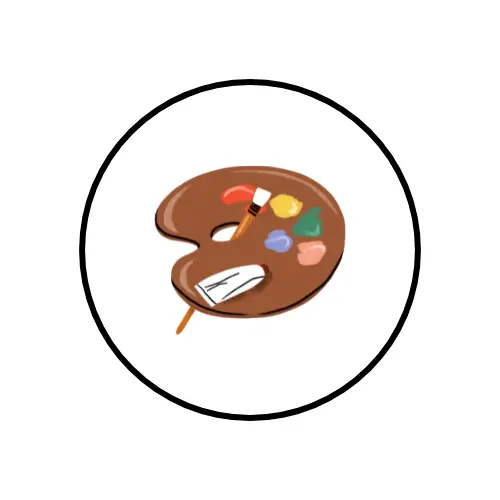
Dibujo y pintura
Mejorá tus habilidades de dibujo y pintura en un ambiente inspirador. Aprendé técnicas de boceto, sombreado y color, y explorá tu creatividad a través de diferentes estilos y materiales.
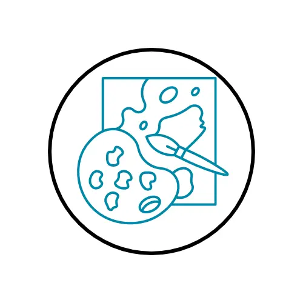
Taller de artes visuales
Explorá diferentes técnicas y medios artísticos como pintura, dibujo y escultura. Desarrollá tu estilo personal mientras trabajás en proyectos creativos guiados por profesionales del arte.
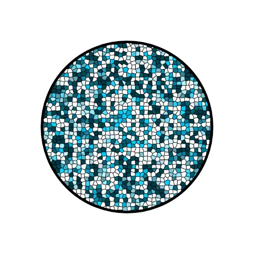
Mosaiquismo
Aprendé a crear mosaicos decorativos usando azulejos y otros materiales. Este taller te enseñará técnicas para diseñar y realizar composiciones artísticas personalizadas, perfectas para decorar cualquier espacio.
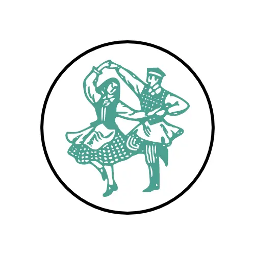
Danza folclórica
Descubrí la riqueza de las danzas tradicionales. Aprenderás coreografías y pasos típicos que te conectarán con las raíces culturales, mientras te divertís en grupo y te mantenés activo.
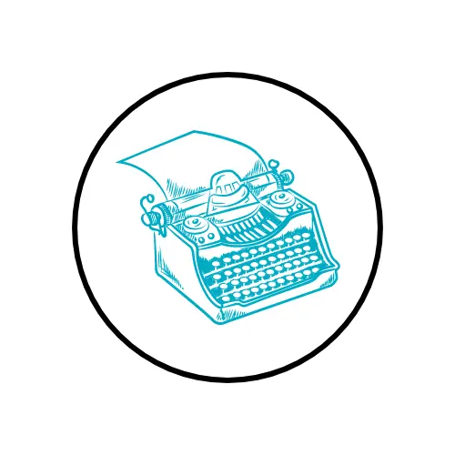
Literatura y escritura
Despertá tu creatividad literaria con este taller. Aprendé a escribir de forma expresiva, trabajando en narrativa, poesía y otros géneros, mientras disfrutás de la lectura y análisis de textos.
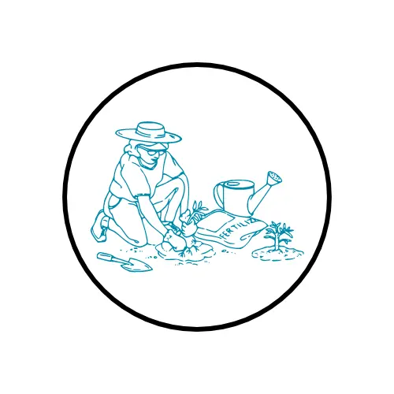
Jardinería
Aprendé sobre el cuidado de plantas y jardines. Este taller te enseñará técnicas básicas para cultivar, podar y mantener tus espacios verdes, aportando belleza natural a tu entorno.
HACETE SOCIO Y MIRÁ TODOS LOS BENEFICIOS
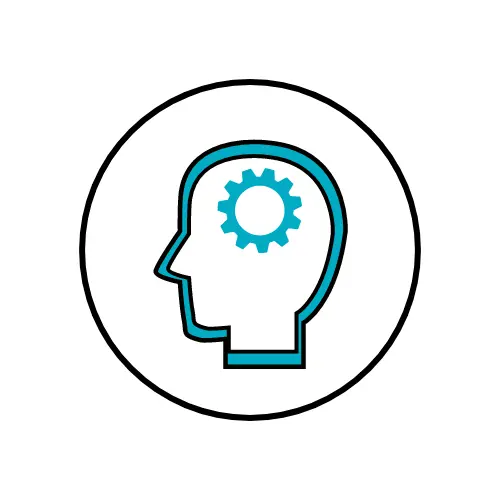
Recreación y estimulación de la memoria
Ejercitá tu mente con actividades diseñadas para mantenerla activa. Un taller divertido donde se refuerzan habilidades cognitivas, esenciales para mejorar la calidad de vida.
Clase de inglés
Mejorá tu nivel de inglés de forma práctica y amena. Trabajá en conversación, gramática y vocabulario con actividades que te ayudarán a comunicarte mejor en este idioma global.
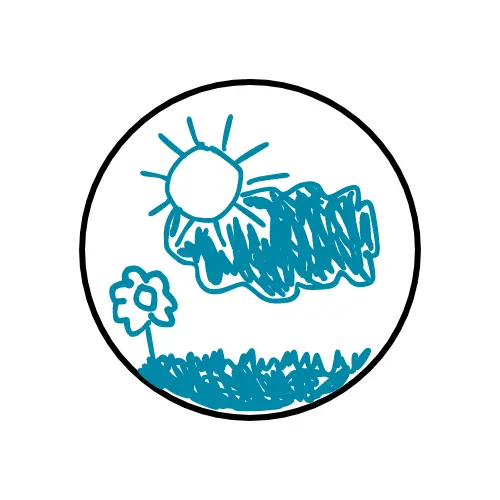
Dibujo y pintura para niños
Fomentá la creatividad de los más pequeños con técnicas de dibujo y pintura. Un espacio lúdico donde podrán expresar sus ideas artísticas libremente.
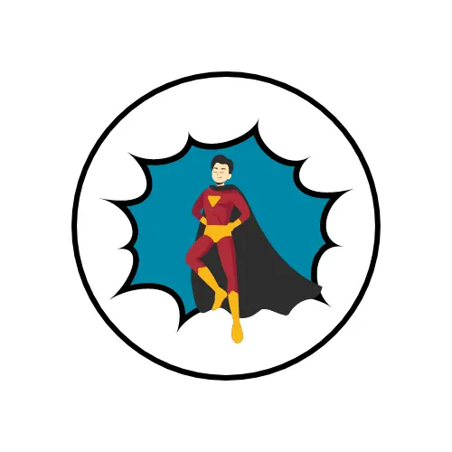
Taller de cómics
Descubrí cómo crear tus propios personajes e historias. Aprendé técnicas de dibujo y narrativa para plasmar tus ideas en un formato visual dinámico y entretenido.
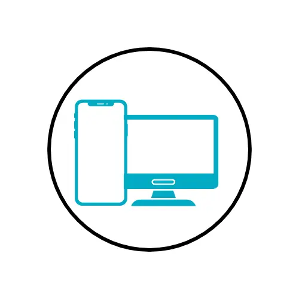
Clase de computación y celular
Aprendé a utilizar tu computadora y celular para tareas diarias, navegar en internet, redes sociales y más. Un taller perfecto para actualizarse en tecnología básica.
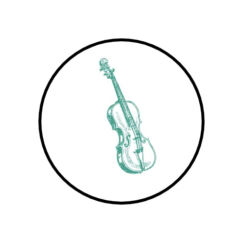
Clase de violín y viola
Desarrollá tus habilidades musicales aprendiendo violín o viola. No importa tu nivel, este taller te guía para dominar técnica, postura y musicalidad de manera progresiva.
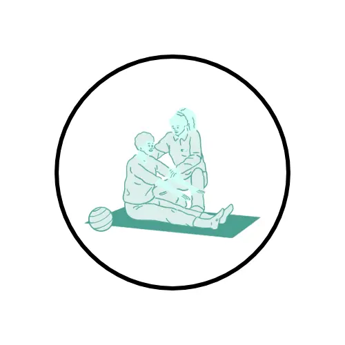
Actividad física para adultos
Mejorá tu salud con ejercicios adaptados a todas las edades. Mantené tu cuerpo activo y flexible, fortaleciendo músculos y mejorando la resistencia en un entorno motivador.
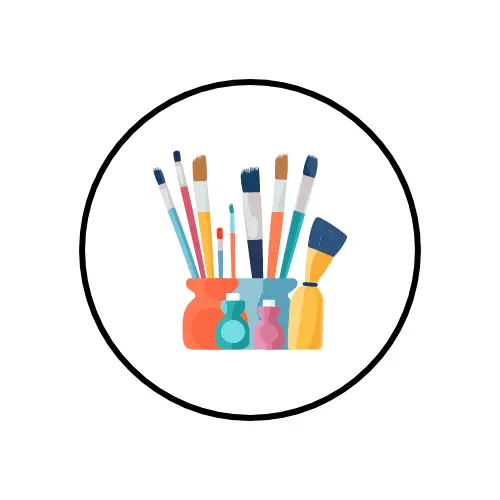
Pintura decorativa
Descubrí técnicas para transformar objetos cotidianos en piezas únicas. Aprendé a aplicar distintos estilos y acabados, ideal para personalizar tu hogar con un toque artístico y original.
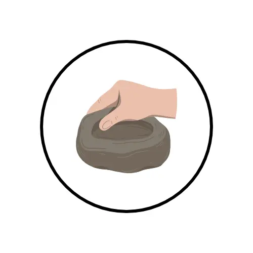
Porcelana fría para niños y adultos
Aprendé a modelar figuras con porcelana fría. Ideal para todas las edades, fomenta la creatividad y mejora habilidades manuales en un ambiente divertido y relajado.